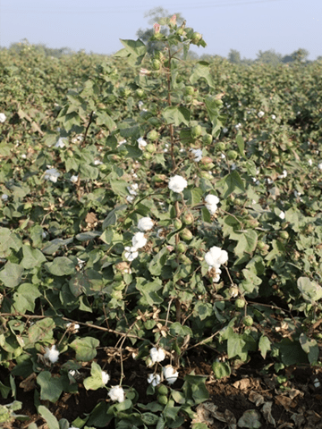

Big boll, Good opening and Easy picking
| Morphological Characters | |||||||||
|---|---|---|---|---|---|---|---|---|---|
| Plant Height & Plant type | Tall and erect plant | ||||||||
| Reaction to Pest and Diseases | Tolerant Jassids & Whitefly | ||||||||
| Boll Size & Shape | Big and Oval | ||||||||
| Quality of produce |
|
||||||||
| Reaction to Stress | Suitable for varied agro – climatic conditions. | ||||||||
Special Features / USPs:
|
|||||||||